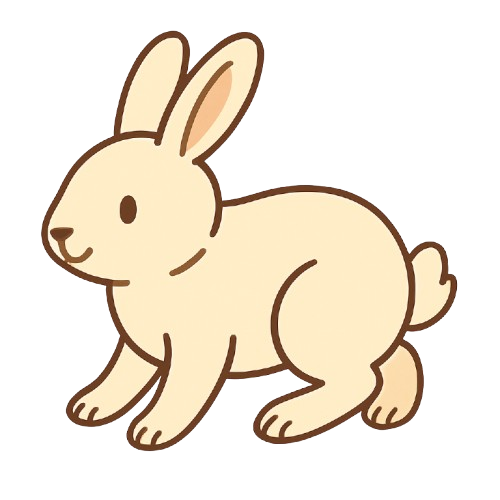
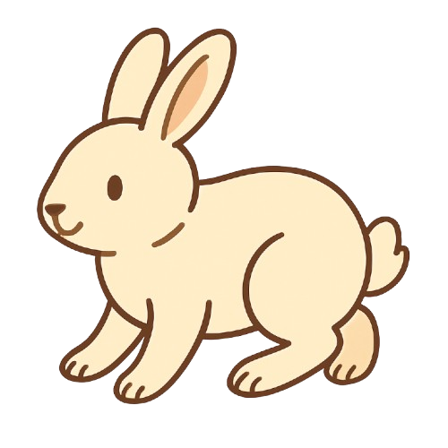

Wow, can’t believe you passed that maze 🤓 How was the maths? LMFOA HAHAHA IM KIDDING
And yeah, yeah—before you laugh at me—yes, this is indeed typed out in my handwriting. (that was harder to import than i thought it would be)
Yeahhhhh... this is how messy it gets. 😌✍️
I did it so it would feel more like a real letter. Like I’m a little closer, even just through a screen. My friends have suffered through my handwriting, so it’s only fair that you do too 😎
You’re welcome.
BUT ANYWAYYYY..... (this is a reallyyyy longgg letter, be ready)
HAPPY ONE YEARR!! I seriously can’t believe it’s been a year already. Time does fly fast, doesn’t it? One moment you’re asking if I have Roblox… and in a blink, we’re already here.
And in the past year, you’ve been nothing but my comfort person and my biggest cheerleader. Thank you for that, seriously. It’s crazy to think that you’re that person to me when you’re literally seas away from me.
You celebrated with me during my highest. The moments I felt proud and excited. You were one of the first people I wanted to tell, the one I searched for when something good happened, even if it was small. You cheered me on, and somehow, your support made my victories feel even bigger. You made me believe they mattered just because you were proud of me.
So don’t ever worry if you’ve had moments where you thought I felt like you were pulling away. Or if you’ve ever feared that I might think you don’t care anymore. Because even though you don't always say them out loud, I feel it. You show it in your own way. You say it in your own way.
And. I. Feel. It.
More than you think.
And when life kicks my ass again, when I’m at my lowest, you don’t disappear. I don’t always tell you when I’m struggling, but somehow, you always find me. You always manage to reach me in my darkest moments. You knew how to handle me, not just the “me†I show to the world, but the real, complicated, messy me. You understood when to listen and when to distract me with dumb stuff until I felt better. You’ve always had this quiet way of knowing exactly what I need.
I don’t know how you do it, but I guess that’s just how platonic soulmates work, right?
So, thank you. Thank you for a presence that always brings comfort.
And I mean real comfort. The kind that calms me and makes the world feel a little less loud. I can’t fully put it into words. It’s just this lightness, this ease, this quiet warmth I feel when you're around. You made me laugh in the most effortless ways. You didn’t even have to try. Somehow, you always knew how to lift the heaviness off my chest. You embraced me in all my forms, never once making me feel like I had to tone myself down.
And I've had people before whose presence made everything feel heavier, like just their mere presence drained me. But with you? It’s the complete opposite. Joy bursts through me when I see your name pop up on my screen.
Thank you for simply staying.
You don’t know how much it means to me to have you in my life.
Thank you for reminding me that I wasn’t alone—that even when everything felt like it was falling apart, I still had someone who wouldn’t leave.
That’s why I dedicated Daylight to you—because that’s exactly what you are to me.
Even if the world tries, it would never dim you. There’s just this natural light you emit upon everyone who has the privilege of knowing you.
Maybe you don’t see it yet. Maybe you don’t fully believe it. But I hope one day, you’ll see yourself the way I see you. I hope you realize just how great of a person you are. How your light leaves traces on everything you touch.
I don’t know why you think so lowly of yourself.
I don’t know what made you see yourself that way—what made you believe that you’re not enough, not special, not worth all the love this world has to offer. What made you think that you're a burden.
But I wish you could see what I see.
You are one of the purest souls I’ve ever known.
You care so deeply. You love so loudly, sometimes in the quietest ways. And you carry so much light, even when you feel like you’re made of shadows.
You have always mattered. Not because of what you do, or how strong you are, or how much you give—but simply because you exist.
I know it’s hard to believe nice things about yourself, especially when the world and your own thoughts try to tell you otherwise. But please let this be one of those rare moments where you let someone else’s voice be louder than your doubts.
Because if you could see yourself through my eyes, even just for a second…
You’d never question your worth again.
I don’t know you personally. While that might be true, I know you well enough to say, without hesitation, that you deserve to be loved deeply, and you are so much more than what you give yourself credit for. And that’s something I’ll keep reminding you of—for as long as you let me.
That’s why everything you touch in this little space I made for you shines a bit brighter. That’s something I want you to see. That’s what I’m trying to show and prove to you. I hope you trust me enough to believe everything I’m saying right now, even the things you find hard to accept about yourself.
You bring peace, too.
Remember that little song I once told you you reminded me of? It’s “Sa Bawat Sandali.†It translates to “in every moment.â€
And its message is something I’ve always held close—the quiet art of being someone’s pahinga. In Filipino, “pahinga†means rest. Peace. That safe pause the soul longs for when the world gets too loud. You are that to me.
When everything gets overwhelming, when things spin too fast, I remember I have this small corner of the internet where you live. And suddenly, things slow down again. Suddenly, I’m okay again. At least a part of my life would always stay that way.
I trust easily. I think you know that about me by now. Sometimes, I hate that part of myself. Being soft, being open, being someone who can be so easily hurt and manipulated.
But then I look at you, and I realize how lucky I am to have someone who values it.
Having you made me feel like, for once, the world was finally on my side.
Like I was allowed to have something good without needing to earn it or the fear of losing it. Just... something good for the sake of being good.
Sometimes, I catch myself worrying. Like maybe this happiness comes with a price. Because it's always been like that for me. For every good thing, there would always be a price to pay. Every time I felt happy, something would come right after to take it away.
So truthfully, I sometimes wait. I find myself bracing for the hurt I know will soon come.
But with you... it never did.
And that’s when I realized—thank the heavens, you were different. You didn’t come into my life to teach me a harsh lesson or to be a temporary joy. You came, and you stayed. You gave me something stable. Something grounding. Something safe.
And I didn’t even know how much I needed that until I had it. Until you happened.
You’ve been one of the kindest and most genuine people I’ve ever met. I treasure you so much, and I hope you know that even if I don’t always say it out loud.
And that’s one of the reasons I created this mini website.
Because I know I can’t always be there—not in every moment, not for every high or low (especially with the long-ass distance)—but I wanted to give you something that could be.
A version of me that stays beside you in quiet ways, through every emotion, without needing to ask.
And I hope this shows you how much you truly mean to me.
Anddd that’s enough of the mushy stuff! 😤 I’ll stop before you start crying more.
You don’t have to read the rest, but if you’re curious, this is how I came up with the website idea.
My original plan was to make a handmade koala statue (?) out of foil, then wrap little tissue flowers around it. HAHA I don’t really know how to explain it. I just saw it on TikTok, and maybe you have too! I thought you’d appreciate that more than an edit, since you love handmade stuff. Plus, I couldn’t think of what to edit anyway 😎
But I scratched the idea. I wanted something long-lasting. Something you could use. Something big, y’know?
And around the same time, I had just finished making an HTML file for a school project — and I really enjoyed it. Then I thought about the “Read Me When†letters I made for my friends... and I decided to combine the two.
You’re really, really, REALLY far away, but I’m not letting that distance stop me from giving you something meaningful. So, uh… here we are!
Plus, I know you’ve been hesitating to come to me a lot of times — and I think that’s normal, don’t worry. I’ve had my moments like that too. But with this, I can be both present and absent at the same time.
So if there are times you’re hesitating, if you’re overwhelmed, unsure, or just don’t know how to say things out loud — you can turn to this. You can really let go. No pressure, no need to explain.
Just something you can come back to whenever you need it. Quiet, steady, and always here for you—just like I try to be.
Still, my arms are open if you need them. I’m the real thing, after all! 😎
Anywayyyy. How’s the website? I’ve been working on it for about a month now. It’s not as good as I imagined it, honestly. School got in the way (as always), so it was hard to find time to really polish everything. But I tried my best to make it something decent. What do you think?
Fun fact: the cassette was originally supposed to be a vinyl player. But bruh, I couldn’t code the arm properly 😠so I had to scratch the whole idea. The main concept was to make you a playlist—but in your style.
It has 30 songs in total. A mix of your favorite artists and mine. I picked them either for the lyrics, their meaning, or simply because they felt right to be playing while you’re reading the letters. Some are songs you already love, others I hope you’ll grow to love 💚
It’s also up on Spotify if you wanna check the full list! One song didn’t make it though, ‘cause it’s still unreleased (rip 🫠).
The maze was just a little fun idea I’d been playing around with for a while before finally deciding to go for it. It’s basically just a maze… but with questions. Some you’d actually love to answer. And, well, a lot of them were just there to annoy you 😌
The character was originally supposed to be a koala (surprise, surprise), and then I thought of making it a bunny-shaped maze. I don’t even know anymore, I was just playing around with things we both love HAHA.
There was supposed to be a second stage too—Super Mario, your favorite. But yeah… my skills totally failed me on that one, and time was really running out 😠So I did the next best thing and just inserted Mario into the maze so at least he’d still be here.
Anddd the petalssss…
They look like lilies… right???
Okay, so originally there was supposed to be this big bouquet of lilies at the top, with petals gracefully falling down the page.
But ONCE AGAIN… my skills said no. 😔
Still, I stuck to the heart of the idea: which was that the petals would carry little messages. I hope you had fun clicking on them!! I took my time thinking what to put 😠!!
If you managed to reach the end of this letter, wow! No way, bro! Congratulations! This is like 12 pages long!
Kidding aside, I hope you like how this turned out even though I didn't maximize the potential of the gift HAHA. And like I said, I hope it serves its purpose for you to start believing in yourself more.
 
